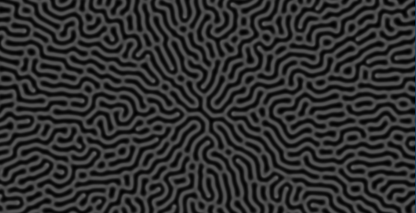
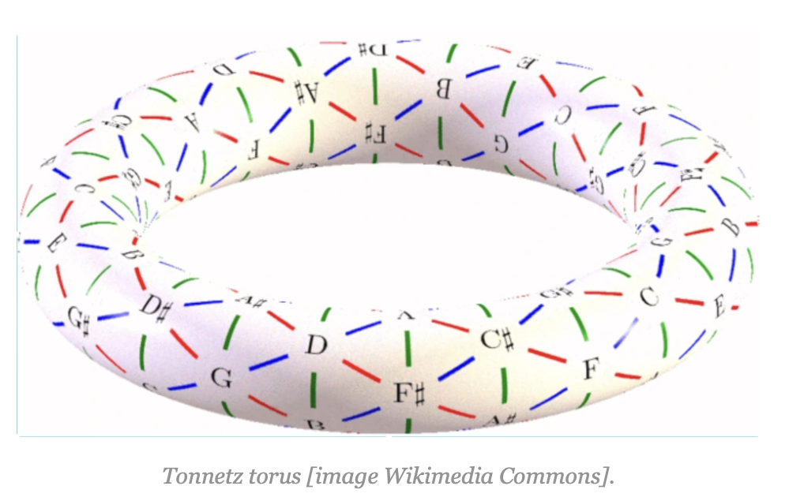
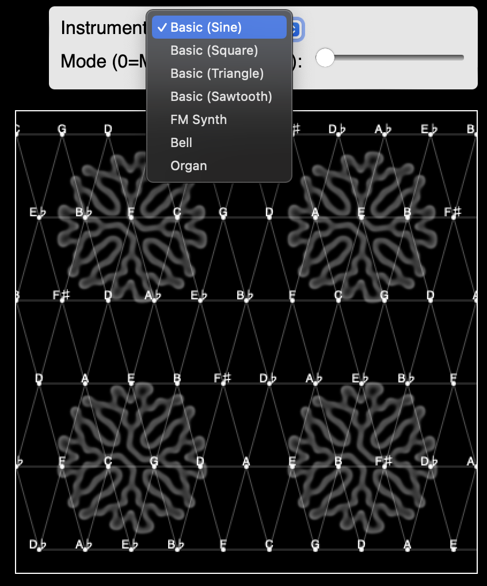
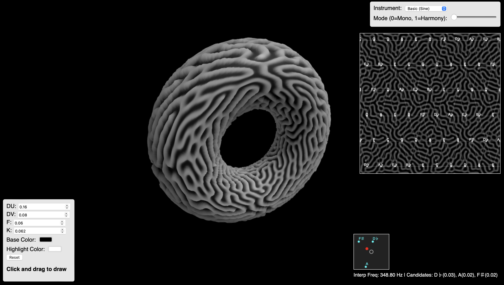

The simulation is based on a variant of the Gray–Scott model. Two chemical concentrations, u and v, evolve over time on a 200×200 grid. Their evolution is governed by the following PDEs:
$$\frac{\partial u}{\partial t} = D_u\,\nabla^2 u - u\,v^2 + F\,(1 - u)$$
$$\frac{\partial v}{\partial t} = D_v\,\nabla^2 v + u\,v^2 - (F+k)\,v$$
Here:
Reaction–Diffusion: I initially implemented this in pygame as that was the most straightforward tool, but I ultimately rewrote everything in JavaScript using Three.js since that has support for nice 3D graphics and it would be really straighforward to make a simple website.
The Tonnetz is a musical network that shows relationships between pitches. Our grid is a 6×12 array where each cell contains a musical note (e.g., “C”, “G”, “D”, etc.) arranged in a pattern that reflects harmonic relationships.
The grid is drawn on an overlay canvas with connecting lines (both horizontal and diagonal) to form the complete network. When a user clicks or drags on the canvas, the system finds the three closest grid points.
In single note mode, their frequencies are interpolated using an inverse‑distance weighted average. The interpolated frequency \( f_{interp} \) is computed as:
$$f_{interp} = \frac{\sum_{i=1}^{3} \frac{1}{d_i+\epsilon} f_i}{\sum_{i=1}^{3} \frac{1}{d_i+\epsilon}}$$
Here, \( f_i \) are the candidate frequencies and \( d_i \) are their distances from the click point (with \( \epsilon \) as a small constant for stability). In harmony mode, all three candidate notes are played simultaneously, with volumes scaled by the corresponding weights.
Tonnetz Diagram: taken from /https://thatsmaths.com/2017/12/28/doughnuts-and-tonnetze/
I have very little knowledge about music, so I had ChatGPT write functions to create various sounds which I felt sounded cool. The result uses the Web Audio API for real-time sound synthesis. Multiple instrument options are available:
The instrument is chosen from a dropdown in the top–right. In single note mode, one note (from the weighted interpolation) is played. In harmony mode, all three candidate notes are played simultaneously with gains scaled according to their inverse–distance weights.
Instrument Options:
The live reaction–diffusion simulation is also used as a texture for a 3D torus in a Three.js scene. The torus rotates slowly, adding a dynamic visual element that complements the instrument's sound generation.
3D View Screenshot:

// Simplified Three.js initialization:
function initThree() {
scene = new THREE.Scene();
camera = new THREE.PerspectiveCamera(75, window.innerWidth/window.innerHeight, 0.1, 1000);
camera.position.z = 3;
renderer = new THREE.WebGLRenderer({ antialias: true });
renderer.setSize(window.innerWidth, window.innerHeight);
document.body.appendChild(renderer.domElement);
const light = new THREE.DirectionalLight(0xffffff, 1);
light.position.set(3,3,3);
scene.add(light);
texture = new THREE.CanvasTexture(simCanvas);
texture.wrapS = texture.wrapT = THREE.RepeatWrapping;
texture.repeat.set(2,2);
const geometry = new THREE.TorusGeometry(1, 0.4, 128, 256);
const material = new THREE.MeshStandardMaterial({
map: texture,
displacementMap: texture,
displacementScale: 0.2,
metalness: 0.2,
roughness: 0.7
});
torus = new THREE.Mesh(geometry, material);
scene.add(torus);
}
The system is fairly interactive. Users can click or drag on the overlay canvas to disturb the reaction–diffusion simulation and trigger sound synthesis.
// Example event handling excerpt:
overlayCanvas.addEventListener("mousedown", e => {
isDrawing = true;
drawOnOverlay(e);
handleInterpolatedNote(e);
});
overlayCanvas.addEventListener("mousemove", e => {
if (isDrawing) {
drawOnOverlay(e);
handleInterpolatedNote(e);
}
});
© 2025 Torus Tonnetz Synthesizer